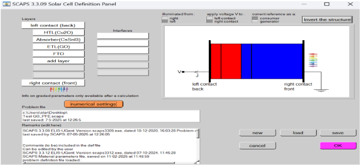
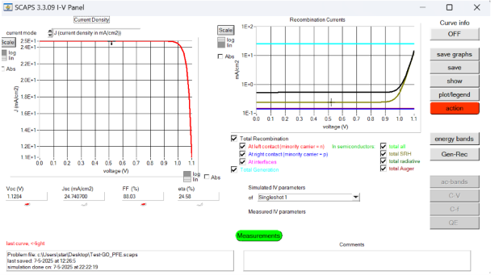
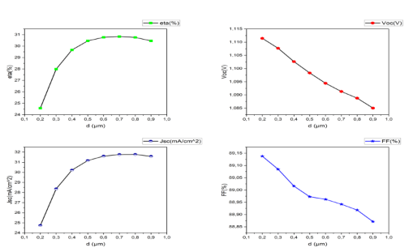
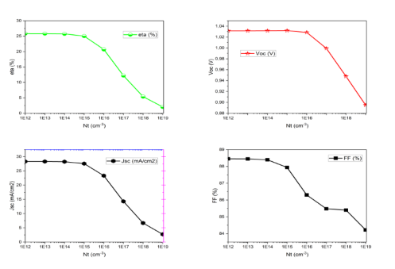
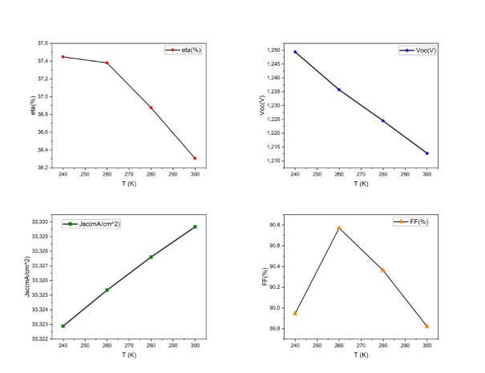

Cellule solaire à pérovskite sans plomb (CsSnI₃) : simulation avec SCAPS-1D
Contexte et problème
Le silicium domine le marché photovoltaïque, mais son rendement est limité. Les cellules à pérovskite sont une alternative prometteuse, mais beaucoup contiennent du plomb, toxique. Ce projet étudie une pérovskite sans plomb, le CsSnI₃, comme couche absorbante.
Ce que j’ai fait
- Étude théorique : énergie photovoltaïque, semi-conducteurs, types de pérovskites, comparaison avec le silicium.
- Modélisation sous SCAPS-1D d’une cellule de structure FTO / GO / CsSnI₃ / Cu₂O.
- Étude de l’influence de trois paramètres sur le rendement (η), la tension Voc, le courant Jsc et le facteur de forme (FF) : l’épaisseur de l’absorbeur (200 à 900 nm), la densité de défauts Nt (10¹² à 10¹⁹ cm⁻³) et la température (240 à 300 K).
- Tracé et analyse des courbes sous Origin Pro.

Résultats
Cellule de référence (absorbeur de 200 nm) : rendement de 24,58 %, Voc de 1,13 V, Jsc de 24,74 mA/cm² et FF de 88,03 %.
- Épaisseur : le rendement augmente puis sature, avec un optimum autour de 0,7 à 0,8 µm. Voc et FF diminuent avec l’épaisseur, Jsc augmente puis sature.
- Défauts (Nt) : tous les paramètres baissent quand Nt augmente, car les défauts agissent comme des centres de recombinaison. La chute devient nette au-delà de 10¹⁵ cm⁻³.
- Température : le rendement et la tension Voc diminuent quand la température augmente.




Limites et suite possible
Il s’agit d’une simulation 1D, sans validation expérimentale. Le point faible principal des pérovskites à base d’étain est l’oxydation de Sn²⁺ en Sn⁴⁺, qui crée des défauts. Une suite logique serait d’étudier cet effet et la stabilité de la cellule.